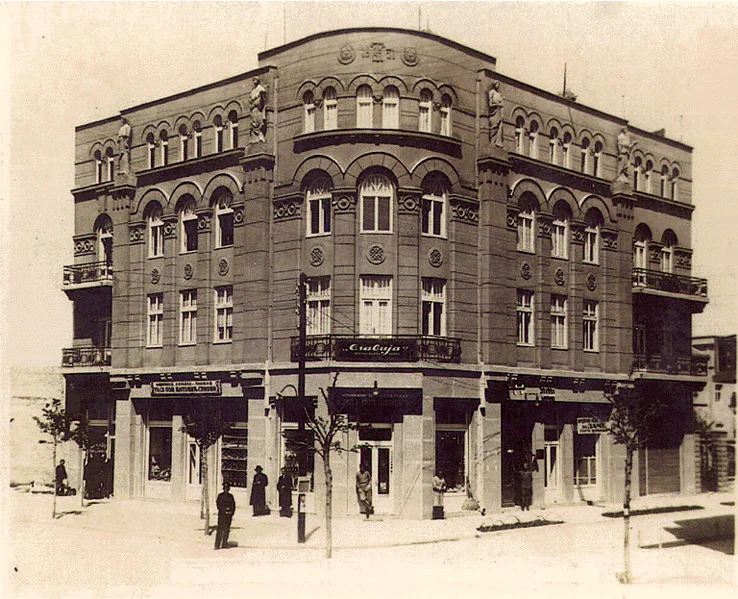
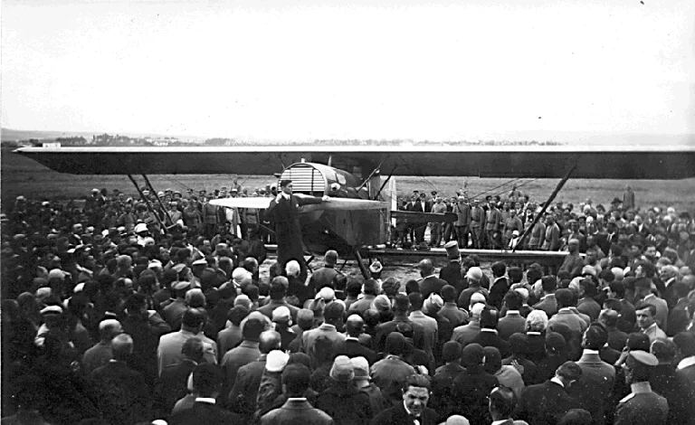
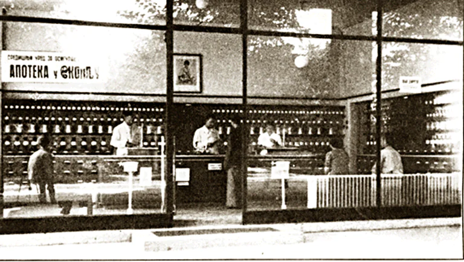

Skopie 1916 - 1917 panorama 1
Documentos de las guerras balcánicas
- Año
- 1916-1917
- Duración
- 00:11

Hotel Turati. Construido a finales del siglo XIX.

La foto se tomó desde el edificio de la antigua estación - el actual Museo de la Ciudad de Skopie -, construida en 1873 durante el Imperio otomano. En primer plano, el acceso a la estación con zonas verdes cercadas. A continuación, la calle principal que lleva a la plaza. Al principio de la calle, a la izquierda, el hotel «Rusia».

Vista hacia la calle principal «Makedonija». El arco se levantó en honor de algún huésped importante. A su izquierda, el hotel «Rusia». - principios del siglo XX.

El palacio de justicia, años 1920.

El palacio de justicia, años 1920.

El edificio de la Comunidad Judía - años 1920.

La casa de las hermanas serbias - años 1920.

Skopie después de 1930. Vista de la calle principal, del actual Museo de la Ciudad de Skopie hacia la plaza. Los dos edificios más altos son el Gran Hotel «Bristol» y, a su derecha, el hotel «Rey de Serbia». Una arquitectura de elementos eclécticos.

Los hoteles Rey de Serbia y Bristol. - años 1920.

La casa de los hermanos Čitkušev. - años 1920

La casa del boticario Ristić, conocida como palacio Ristić. A la izquierda de la foto se ve parte del hotel «Águila Blanca». (años 1920)

Palacio Ristić - hacia 1925.

El palacio Ristić. A la izquierda de la foto se ve parte del hotel «Águila Blanca». (hacia 1925)

Hotel «Pariz». Se ve el patio del hotel, con una cervecería y una pastelería. - años 1920

Hotel «Moskva» - años 1930

El Banco Otomano - hacia 1910.

La placita junto al puente de piedra, en la margen izquierda del Vardar. En primer plano, el monumento a los caídos en las guerras balcánicas; detrás a la derecha, el Banco Otomano.
- años 1920

El nuevo hotel «Sarajevo» en construcción - en la plaza. A su izquierda, el café del teatro y, encima, el antiguo hotel «Sarajevo». - años 1920

La plaza con el hotel «Sarajevo» y el popular café «Marger», lugar favorito de los vecinos de Skopie. A la izquierda del hotel «Sarajevo» estaba el hotel «Obedinuvanje». En primer plano, en la acera, un vendedor de rosquillas. (hacia 1935)

El cuartel de la fortaleza de Skopie - Kale. - años 1920

La cárcel de Skopie. Estaba muy cerca de la mezquita de Mustafa Pachá. - finales del siglo XIX

El Hükümet (el ayuntamiento). A continuación, la oficina de correos turca y, detrás, la mezquita de Mustafa Pachá. - años 1920

El Hükümet (el ayuntamiento). A continuación, la oficina de correos turca. Al fondo se ve la mezquita de Mustafa Pachá. - años 1920

El Hükümet (el ayuntamiento). A continuación, la oficina de correos turca y, detrás, la mezquita de Mustafa Pachá. - años 1920

El edificio de la inspección de finanzas. Hoy alberga el Instituto de Metales Preciosos. En época otomana era el «Hükümet» (ayuntamiento). - años 1930

El gimnasio o casa Sokol de Skopie «Sokolana», construido en 1936.

La casa Sokol de Skopie, construida en 1936.

El hospital militar «Media Luna Roja» - finales del siglo XIX. El edificio destaca por su estilo académico con formas renacentistas y barrocas.

El hospital militar «Media Luna Roja», construido a finales del siglo XIX. El edificio destaca por su estilo académico con formas renacentistas y barrocas. (años 1920)

El hospital militar «Media Luna Roja», construido a finales del siglo XIX.

El hospital militar «Media Luna Roja», construido a finales del siglo XIX.

Vista de la calle principal, del actual Museo de la Ciudad de Skopie hacia la plaza. El palacio Krang, con elementos clásicos y barrocos, albergaba el cine «Kapitol». Al fondo de la foto se ve el Casino de Oficiales. - años 1930

El sanatorio «Vardar» - años 1930

La casa del dentista Dr. Ruben, que tenía su consulta junto al puente de piedra, en la margen izquierda del Vardar. - años 1930

Edificio de correos. - años 1930

El Banco Nacional, construido según el proyecto del arquitecto B. Nestorović. Un academicismo simplificado en los elementos decorativos e influencias del modernismo. - años 1930.

El Banco Nacional de noche. Delante, parte del paseo de los vecinos de Skopie, conocido popularmente como «el Corso». - años 1930.

El Banco Nacional, construido según el proyecto del arquitecto B. Nestorović. Un academicismo simplificado en los elementos decorativos e influencias del modernismo. A la derecha, la Cámara de Comercio (arquitecto M. Zloković) - años 1930.

El puente de piedra con el Banco Nacional al fondo. - años 1930

El Banco Nacional, el Casino de Oficiales y parte del puente de piedra. - años 1930

El Banco Nacional con el Casino de Oficiales y el puente de piedra. La foto se tomó desde la margen izquierda del Vardar, desde la placita donde paraban los coches de caballos. (años 1930)

El antiguo instituto femenino. - años 1930

La central térmica de Skopie - 1910

El interior de la central térmica de Skopie - 1910

La fábrica de medicamentos. - años 1920.

La primera gasolinera «Shell» de Skopie. - 1927

Ejercicio de los bomberos de Skopie. - años 1930.

Un taller de sastrería típico en el antiguo bazar - 1920

Parada de carreteros con carros. - años 1920

La curtiduría de Skopie. - años 1920.

La cantera de Skopie, en Kisela Voda, en las laderas del Vodno. - años 1920.

El aeródromo cerca de Skopie - 1933. Estaba donde hoy se encuentran los barrios de Aerodrom y Jane Sandanski.

El hipódromo de Skopie. (finales de los años 1920)

La sala de cine «Vardar» - años 1940. Entre las dos guerras mundiales Skopie tenía estos cines: Zrinjski, Apolo (ardió en 1930 y en su lugar se construyó el cine Korzo), Balkan, Vardar, Kapitol, Uranija, Avala.

El monumento a los alumnos caídos en la Primera Guerra Mundial - años 1920.

Farmacia municipal. - 1932.

La Caja de Seguros Obreros (el actual hospital municipal). - años 1930

La Asamblea de la R. de Macedonia, años 1940. En esos años albergaba la Dirección Regional.

La actual Asamblea de la R. de Macedonia - los años anteriores al terremoto.

Stara - Nova Banja. Parte de Skopie donde hoy está la universidad «San Cirilo y San Metodio»

El edificio de la Dirección de Asuntos Internos, construido en los años 1950. Más tarde albergó las facultades de Derecho, Economía y Filosofía y el rectorado.

El Palacio de Justicia, justo después del terremoto. A su izquierda, la antigua mezquita «Elen Kapan».

El edificio de la compañía eléctrica (1962-1964), muy cerca de la plaza de la ciudad.

El centro comercial municipal. Las obras comenzaron oficialmente el 11 de octubre de 1969 y el 27 de abril de 1973 se abrió la parte central; desde entonces el complejo funciona con normalidad.

El centro comercial municipal (1969 - 1973) con parte del parque «Mujer combatiente».

El centro comercial municipal (1969 - 1973) con la zona verde del parque «Mujer combatiente».


Documentos de las guerras balcánicas
Noticiario n.º 21
 Acueducto4 postales
Acueducto4 postales Kale30 postales
Kale30 postales Puentes60 postales
Puentes60 postales Malecón58 postales
Malecón58 postales Plaza46 postales
Plaza46 postales Edificios66 postales
Edificios66 postales Templos cristianos19 postales
Templos cristianos19 postales Edificios musulmanes33 postales
Edificios musulmanes33 postales Casino de Oficiales29 postales
Casino de Oficiales29 postales Teatro28 postales
Teatro28 postales Estación de ferrocarril13 postales
Estación de ferrocarril13 postales Escuelas36 postales
Escuelas36 postales Parques12 postales
Parques12 postales Mercados18 postales
Mercados18 postales Calles38 postales
Calles38 postales Panorama I60 postales
Panorama I60 postales Panorama II30 postales
Panorama II30 postales Collages55 postales
Collages55 postales Inundaciones9 postales
Inundaciones9 postales Terremoto27 postales
Terremoto27 postales Skopie 200026 postales
Skopie 200026 postales